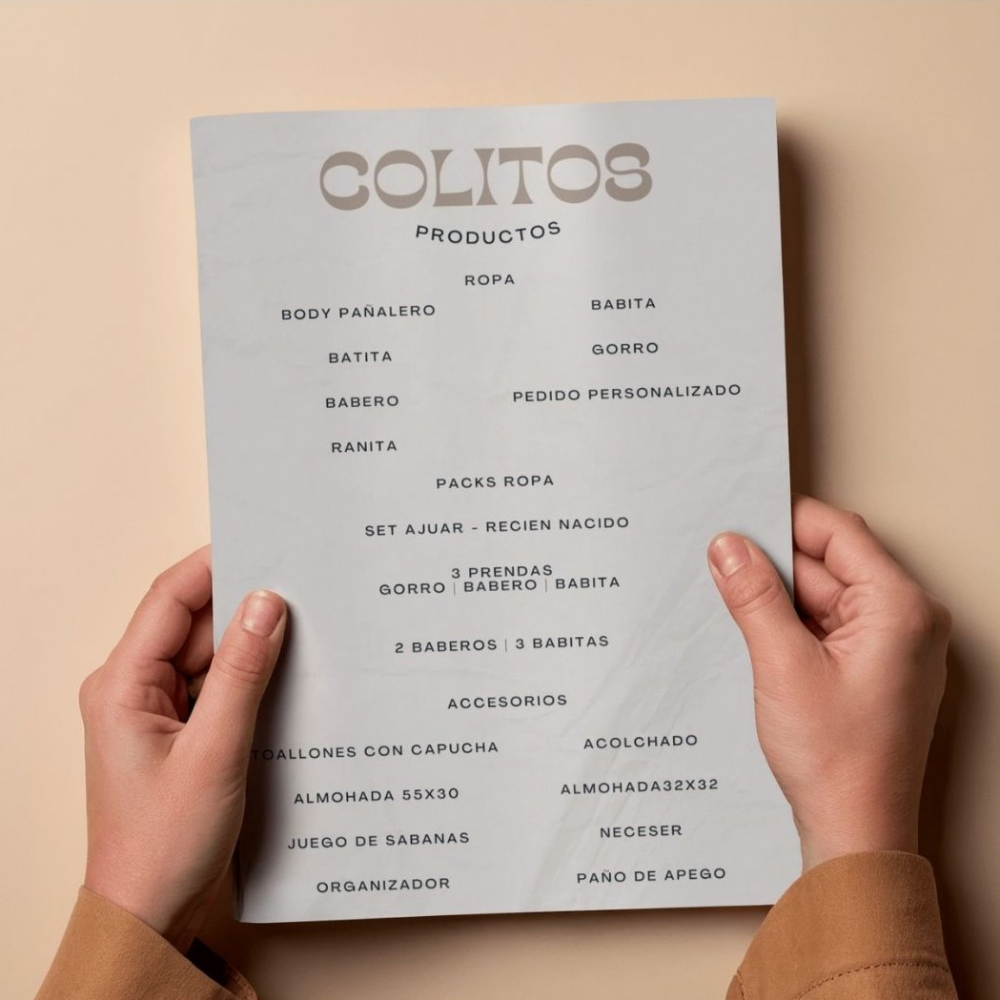
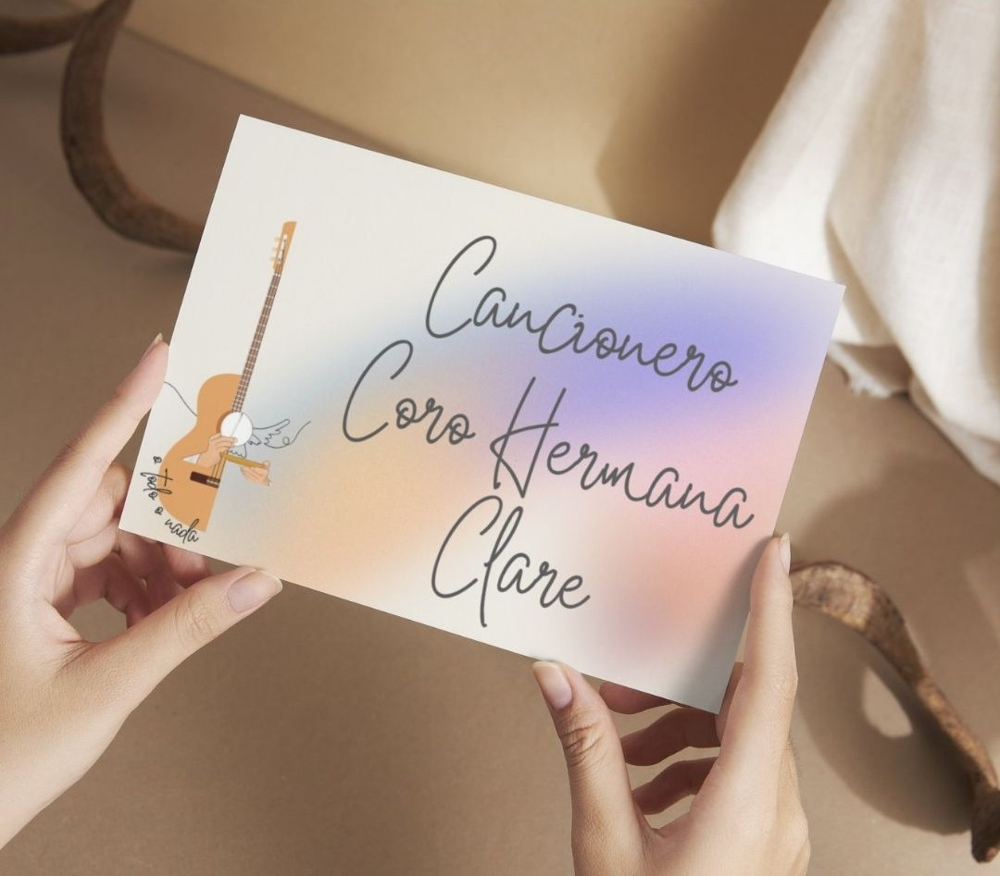
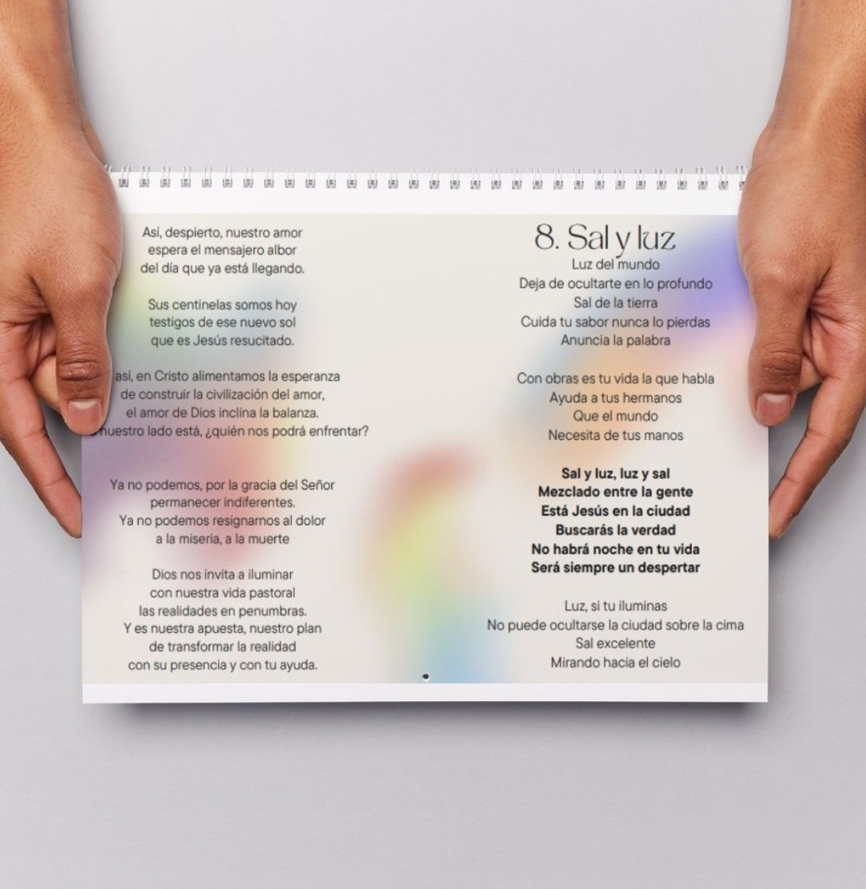
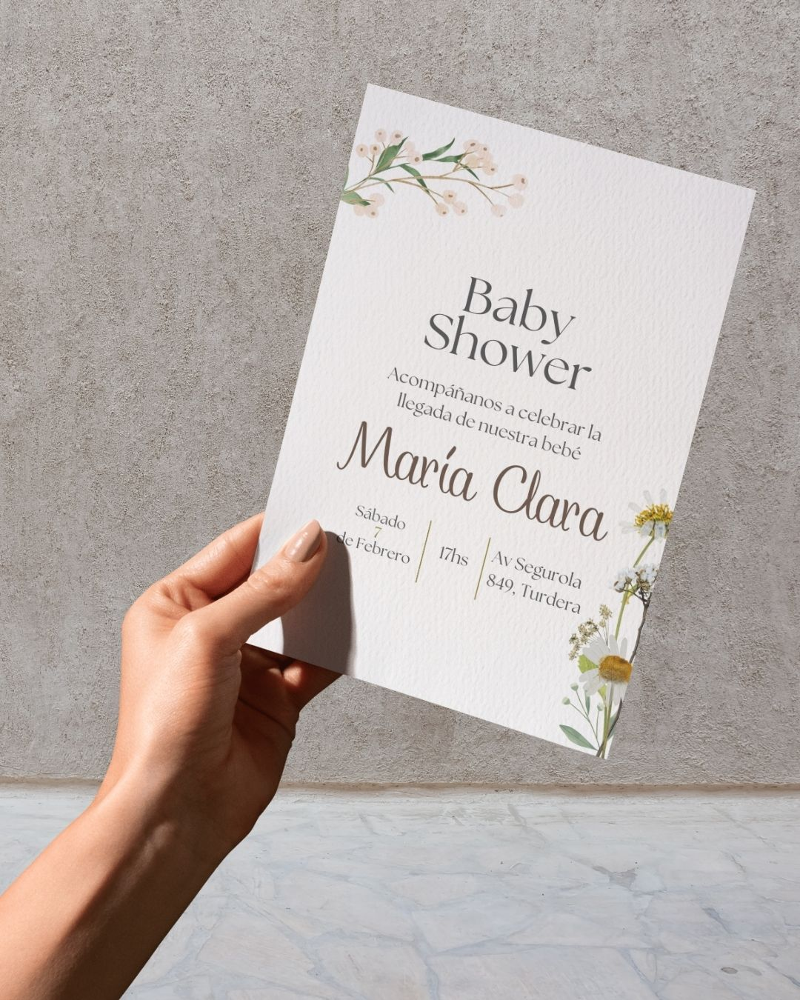
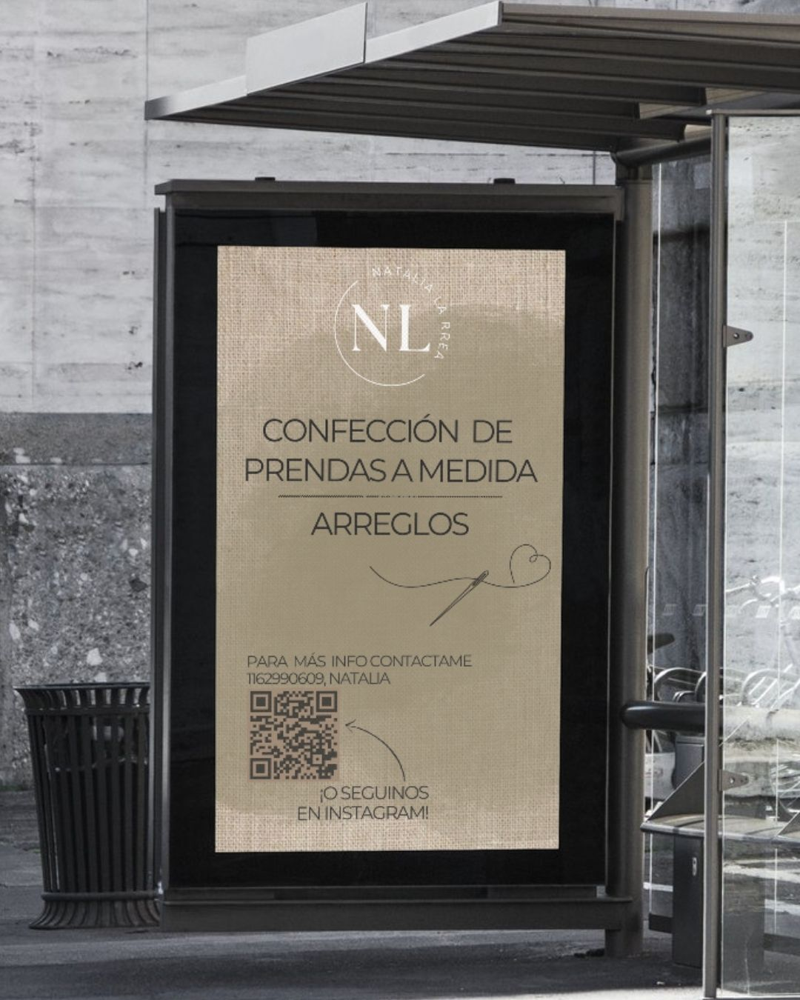
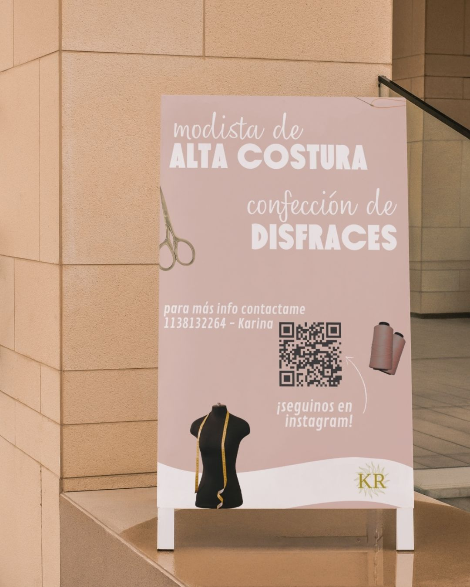
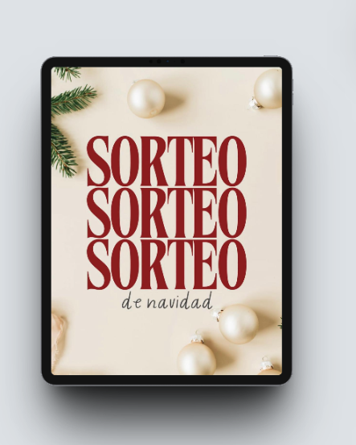
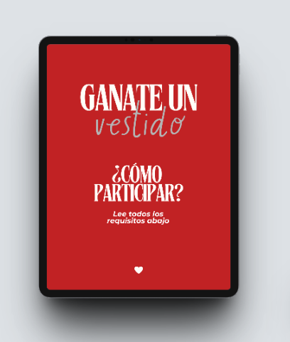

Diseño editorial e impreso
Maquetación de revistas, cartas y piezas físicas donde la jerarquía tipográfica, el uso del espacio en blanco y la selección del papel son los protagonistas de la experiencia.



Branding & Señalética
Piezas que anuncian y celebran. Desde invitaciones personalizadas hasta flyers promocionales, buscando transmitir la emoción del evento o del mensaje en una sola imagen.




